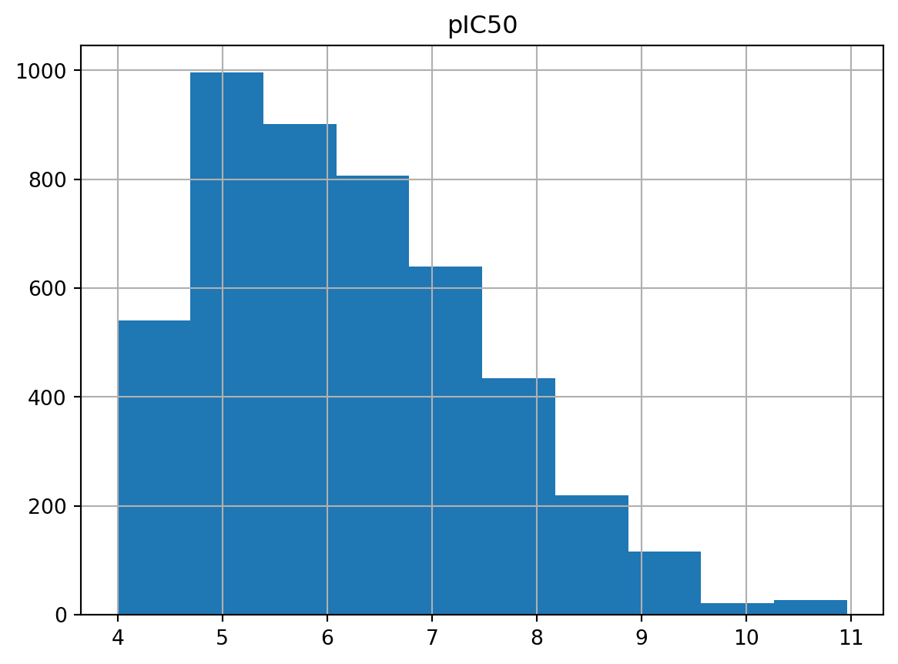

!pip install --upgrade pipRequirement already satisfied: pip in /Library/Frameworks/Python.framework/Versions/3.11/lib/python3.11/site-packages (23.2.1)I’ve now come to a stage to do some more in-depth machine learning work after reading some peer-reviewed papers about it in relation to drug discovery and cheminformatics. Previously, I’ve only lightly touched on a commonly used classifier algorithm, logistic regression, as the first series in the machine learning realm. Reflecting back, I think I could’ve done a more thorough job during data preparation stage. So this would be attempted this time.
From a few of the papers I’ve read so far, dated in the recent years of 2021 and 2022, it seemed that traditional machine learning (ML) methods were still indispensible performance-wise, and along with deep learning neural networks, they tend to increase prediction accuracy a bit more. I haven’t ventured into the practicality and usefulness of large language models in drug discovery yet. From what I could gather from experienced seniors in this area, they were still very much too novel to be useful, and from what I could imagine, molecular representations in texts or strings probably had already created numerous headaches e.g. standardisations regarding to whether to use canonical SMILES and/or SELFIES or not, and probably compound chiralities and so on. Because of this, I’d be sticking with learning to walk first in the conventional ML area before trying to jog and run actually (plans to work on deep learning in the future).
The data preparation was carried out with strong reference to the materials and methods section in this paper: van Tilborg, D. et al. J. Chem. Inf.Model. 2022, 62, 5938-5951. There were probably other methods out there, but this was the paper I’ve read recently that had made sense and relatively easy to follow.
This time I’ve decided to try something new which was to use the ChEMBL webresource client to get data from the scratch (i.e. not from direct file downloads from the ChEMBL website). I found this great online resource about fetching data this way here - reference: TeachOpenCADD talktorial on [compound data acquisition(https://projects.volkamerlab.org/teachopencadd/talktorials/T001_query_chembl.html)]. The data retrieval workflow used below was mainly adapted from this cited talktorial.
The webresource client was supported by ChEMBL group and based on a Django QuerySet interface - their GitHub repository might explain a bit more about it, particularly the Jupyter notebook provided in the repository would help a lot for how to write code to search for specific data.
To do this, a few libraries were needed first.
!pip install --upgrade pipRequirement already satisfied: pip in /Library/Frameworks/Python.framework/Versions/3.11/lib/python3.11/site-packages (23.2.1)%pip install chembl_webresource_clientRequirement already satisfied: chembl_webresource_client in /Library/Frameworks/Python.framework/Versions/3.11/lib/python3.11/site-packages (0.10.8)
Requirement already satisfied: urllib3 in /Library/Frameworks/Python.framework/Versions/3.11/lib/python3.11/site-packages (from chembl_webresource_client) (1.26.13)
Requirement already satisfied: requests>=2.18.4 in /Library/Frameworks/Python.framework/Versions/3.11/lib/python3.11/site-packages (from chembl_webresource_client) (2.28.1)
Requirement already satisfied: requests-cache~=0.7.0 in /Library/Frameworks/Python.framework/Versions/3.11/lib/python3.11/site-packages (from chembl_webresource_client) (0.7.5)
Requirement already satisfied: easydict in /Library/Frameworks/Python.framework/Versions/3.11/lib/python3.11/site-packages (from chembl_webresource_client) (1.10)Requirement already satisfied: charset-normalizer<3,>=2 in /Library/Frameworks/Python.framework/Versions/3.11/lib/python3.11/site-packages (from requests>=2.18.4->chembl_webresource_client) (2.1.1)
Requirement already satisfied: idna<4,>=2.5 in /Library/Frameworks/Python.framework/Versions/3.11/lib/python3.11/site-packages (from requests>=2.18.4->chembl_webresource_client) (3.4)
Requirement already satisfied: certifi>=2017.4.17 in /Library/Frameworks/Python.framework/Versions/3.11/lib/python3.11/site-packages (from requests>=2.18.4->chembl_webresource_client) (2022.12.7)
Requirement already satisfied: attrs<22.0,>=21.2 in /Library/Frameworks/Python.framework/Versions/3.11/lib/python3.11/site-packages (from requests-cache~=0.7.0->chembl_webresource_client) (21.4.0)
Requirement already satisfied: itsdangerous>=2.0.1 in /Library/Frameworks/Python.framework/Versions/3.11/lib/python3.11/site-packages (from requests-cache~=0.7.0->chembl_webresource_client) (2.1.2)
Requirement already satisfied: pyyaml>=5.4 in /Library/Frameworks/Python.framework/Versions/3.11/lib/python3.11/site-packages (from requests-cache~=0.7.0->chembl_webresource_client) (6.0.1)
Requirement already satisfied: url-normalize<2.0,>=1.4 in /Library/Frameworks/Python.framework/Versions/3.11/lib/python3.11/site-packages (from requests-cache~=0.7.0->chembl_webresource_client) (1.4.3)Requirement already satisfied: six in /Library/Frameworks/Python.framework/Versions/3.11/lib/python3.11/site-packages (from url-normalize<2.0,>=1.4->requests-cache~=0.7.0->chembl_webresource_client) (1.16.0)Note: you may need to restart the kernel to use updated packages.# Import libraries
# Fetch data through ChEMBL webresource client
from chembl_webresource_client.new_client import new_client
# RDKit modules
#from rdkit.Chem import PandasTools
# Dataframe library
#import numpy as np
import pandas as pd
# Progress bar
from tqdm import tqdmTo see what types of data were provided by ChEMBL webresource client, run the following code and refer to ChEMBL documentations to find out what data were embedded inside which data categories. Sometimes, it might not be that straight forward and some digging would be required (I went back to this step to find the “data_validity_comment” when I got to the compound sanitisation step actually).
available_resources = [resource for resource in dir(new_client) if not resource.startswith('_')]
print(available_resources)['activity', 'activity_supplementary_data_by_activity', 'assay', 'assay_class', 'atc_class', 'binding_site', 'biotherapeutic', 'cell_line', 'chembl_id_lookup', 'compound_record', 'compound_structural_alert', 'description', 'document', 'document_similarity', 'drug', 'drug_indication', 'drug_warning', 'go_slim', 'image', 'mechanism', 'metabolism', 'molecule', 'molecule_form', 'official', 'organism', 'protein_classification', 'similarity', 'source', 'substructure', 'target', 'target_component', 'target_relation', 'tissue', 'xref_source']Create resource objects to enable API access as suggested.
# for targets (proteins)
targets_api = new_client.target
# for bioactivities
bioact_api = new_client.activity
# for compounds
cpd_api = new_client.moleculeCheck object type for one of these API objects (e.g. bioactivity API object).
type(bioact_api)chembl_webresource_client.query_set.QuerySetSelect a protein target e.g. acetylcholinesterase (this was randomly chosen).
# Specify Uniprot ID for acetylcholinesterase
uniprot_id = "P22303"
# Get info from ChEMBL about this protein target,
# with selected features only
targets = targets_api.get(target_components__accession = uniprot_id).only(
"target_chembl_id",
"organism",
"pref_name",
"target_type"
)The query results were stored in a “targets” object, which was a QuerySet with lazy data evaluation only, meaning it would only react when there was a request for the data.
# Read "targets" with Pandas
targets = pd.DataFrame.from_records(targets)
targets| organism | pref_name | target_chembl_id | target_type | |
|---|---|---|---|---|
| 0 | Homo sapiens | Acetylcholinesterase | CHEMBL220 | SINGLE PROTEIN |
| 1 | Homo sapiens | Acetylcholinesterase | CHEMBL220 | SINGLE PROTEIN |
| 2 | Homo sapiens | Cholinesterases; ACHE & BCHE | CHEMBL2095233 | SELECTIVITY GROUP |
Select protein target from this dataframe - choosing the first one.
# Save the first protein in the dataframe
select_target = targets.iloc[0]
select_targetorganism Homo sapiens
pref_name Acetylcholinesterase
target_chembl_id CHEMBL220
target_type SINGLE PROTEIN
Name: 0, dtype: objectSave the selected ChEMBL ID first (to be used later).
chembl_id = select_target.target_chembl_id
# Check it's saved
print(chembl_id)CHEMBL220Obtaining bioactivity data for the selected target.
bioact = bioact_api.filter(
# Use the previously saved target ChEMBL ID
target_chembl_id = chembl_id,
# Bioactivity type
type = "IC50",
# Requesting exact measurements
relation = "=",
# Binding data as "B"
assay_type = "B"
).only(
"activity_id",
"data_validity_comment"
"assay_chembl_id",
"assay_description",
"assay_type",
"molecule_chembl_id",
"type",
"standard_units",
"relation",
"standard_value",
"target_chembl_id",
"target_organism",
)
# Check the length and type of bioactivities object
print(len(bioact), type(bioact))6129 <class 'chembl_webresource_client.query_set.QuerySet'>To have a quick look at the data being held inside each entry of the bioact dataset, e.g. for first entry.
print(len(bioact[0]), type(bioact[0]))
bioact[0]14 <class 'dict'>{'activity_id': 33969,
'assay_chembl_id': 'CHEMBL643384',
'assay_description': 'Inhibitory concentration against acetylcholinesterase',
'assay_type': 'B',
'data_validity_comment': None,
'molecule_chembl_id': 'CHEMBL133897',
'relation': '=',
'standard_units': 'nM',
'standard_value': '750.0',
'target_chembl_id': 'CHEMBL220',
'target_organism': 'Homo sapiens',
'type': 'IC50',
'units': 'uM',
'value': '0.75'}The next step might take a few minutes - downloading the QuerySet as a Pandas DataFrame.
bioact_df = pd.DataFrame.from_dict(bioact)
bioact_df.head()| activity_id | assay_chembl_id | assay_description | assay_type | data_validity_comment | molecule_chembl_id | relation | standard_units | standard_value | target_chembl_id | target_organism | type | units | value | |
|---|---|---|---|---|---|---|---|---|---|---|---|---|---|---|
| 0 | 33969 | CHEMBL643384 | Inhibitory concentration against acetylcholine... | B | None | CHEMBL133897 | = | nM | 750.0 | CHEMBL220 | Homo sapiens | IC50 | uM | 0.75 |
| 1 | 37563 | CHEMBL643384 | Inhibitory concentration against acetylcholine... | B | None | CHEMBL336398 | = | nM | 100.0 | CHEMBL220 | Homo sapiens | IC50 | uM | 0.1 |
| 2 | 38902 | CHEMBL643384 | Inhibitory concentration against acetylcholine... | B | None | CHEMBL130628 | = | nM | 300.0 | CHEMBL220 | Homo sapiens | IC50 | uM | 0.3 |
| 3 | 41170 | CHEMBL643384 | Inhibitory concentration against acetylcholine... | B | None | CHEMBL130478 | = | nM | 800.0 | CHEMBL220 | Homo sapiens | IC50 | uM | 0.8 |
| 4 | 42363 | CHEMBL643384 | Inhibitory concentration against acetylcholine... | B | None | CHEMBL130112 | = | nM | 2400.0 | CHEMBL220 | Homo sapiens | IC50 | uM | 2.4 |
Check total rows and columns in the bioactivities dataframe.
bioact_df.shape(6129, 14)To see a variety of units being recorded in the ChEMBL database - would need to be converted to nM.
bioact_df["units"].unique()array(['uM', 'mM', 'nM', 'M', 'ug ml-1', 'pM', "10'-5M", "10'-3M",
"10'-2M", "10'-4M", "10'-7M", "10'-9M", "10'-6M", "10'-8M",
"10'-3microM", "10'-4microM", 'uM/L', "10'-10M", 'umol', 'umol/L',
"10'3pM", "10'6pM", "10'5pM", "10'2pM", "10'-12M", "10'-2microM",
'10^-3microM', '10^-4microM', 'mg/ml', 'µM'], dtype=object)The simplest thing to do was to drop the “units” and “value” columns, which were in micromolar (mM), and to avoid unit conversion to nanomolar (nM), we could use columns such as “standard_units” and “standard_value” which were recorded with nM already.
bioact_df.drop(["units", "value"], axis = 1, inplace = True)
# Re-check df
bioact_df.head()| activity_id | assay_chembl_id | assay_description | assay_type | data_validity_comment | molecule_chembl_id | relation | standard_units | standard_value | target_chembl_id | target_organism | type | |
|---|---|---|---|---|---|---|---|---|---|---|---|---|
| 0 | 33969 | CHEMBL643384 | Inhibitory concentration against acetylcholine... | B | None | CHEMBL133897 | = | nM | 750.0 | CHEMBL220 | Homo sapiens | IC50 |
| 1 | 37563 | CHEMBL643384 | Inhibitory concentration against acetylcholine... | B | None | CHEMBL336398 | = | nM | 100.0 | CHEMBL220 | Homo sapiens | IC50 |
| 2 | 38902 | CHEMBL643384 | Inhibitory concentration against acetylcholine... | B | None | CHEMBL130628 | = | nM | 300.0 | CHEMBL220 | Homo sapiens | IC50 |
| 3 | 41170 | CHEMBL643384 | Inhibitory concentration against acetylcholine... | B | None | CHEMBL130478 | = | nM | 800.0 | CHEMBL220 | Homo sapiens | IC50 |
| 4 | 42363 | CHEMBL643384 | Inhibitory concentration against acetylcholine... | B | None | CHEMBL130112 | = | nM | 2400.0 | CHEMBL220 | Homo sapiens | IC50 |
bioact_df.dtypesactivity_id int64
assay_chembl_id object
assay_description object
assay_type object
data_validity_comment object
molecule_chembl_id object
relation object
standard_units object
standard_value object
target_chembl_id object
target_organism object
type object
dtype: object# Small detour test
# Tried with Polars - standard_value casted as "str", so would still need to convert to floats
# import polars as pl
# ba_df = pl.from_pandas(bioact_df)
# ba_df.head()Convert the column of “standard_value” from object to floats - so we could use this half maximal inhibitory concentration (IC50) values for calculations later.
bioact_df = bioact_df.astype({"standard_value": "float64"})
# Check column data types again
bioact_df.dtypesactivity_id int64
assay_chembl_id object
assay_description object
assay_type object
data_validity_comment object
molecule_chembl_id object
relation object
standard_units object
standard_value float64
target_chembl_id object
target_organism object
type object
dtype: objectTaking care of any missing entries by removing them in the first place. I excluded “data_validity_comment” column in this exercise as this was required to check if there were any activity data of the compounds that were deemed to be not as valid e.g. excessively high IC50 value and so on. A lot of the compounds in this column probably had “None”, which ensured that there were no particular alarm bells to the curated bioactivity data.
bioact_df.dropna(subset = ["activity_id", "assay_chembl_id", "assay_description", "assay_type", "molecule_chembl_id", "relation", "standard_units", "standard_value", "target_chembl_id", "target_organism", "type"], axis = 0, how = "any", inplace = True)
# Check number of rows and columns again (in this case, there appeared to be no change)
bioact_df.shape(6129, 12)Since all unique units inside the “units” and “values” columns were checked previously, I’d done the same for the “standard_units” column to see the ones recorded in it.
bioact_df["standard_units"].unique()array(['nM', 'ug.mL-1', "10'3pM", "10'6pM", "10'5pM", '10^-4microM', 'µM'],
dtype=object)There were a mixture of nM, mM and also picomolars (pM)!
# Check for number of non-nM units
bioact_df[bioact_df["standard_units"] != "nM"].shape[0]30There appeared to be 30 non-nM values inside the fetched bioactivity data.
bioact_df = bioact_df[bioact_df["standard_units"] == "nM"]Then narrow the results to only “nM” and check the dataframe again to see what units were left now.
# Check there were only nM
bioact_df["standard_units"].unique()array(['nM'], dtype=object)So the filtering worked and currently the number of rows and columns had been reduced.
# Check df rows & columns
bioact_df.shape(6099, 12)Next part would be to remove all duplicates in the dataframe, especially when there were duplicate tests for the same compound.
bioact_df.drop_duplicates("molecule_chembl_id", keep = "first", inplace = True)Renamed the “standard_value” and “standard_units” columns to be “IC50” and “units” respectively.
bioact_df.rename(
columns = {
"standard_value": "IC50",
"standard_units": "units"
}, inplace = True
)
# Check df to ensure name change
bioact_df.head()| activity_id | assay_chembl_id | assay_description | assay_type | data_validity_comment | molecule_chembl_id | relation | units | IC50 | target_chembl_id | target_organism | type | |
|---|---|---|---|---|---|---|---|---|---|---|---|---|
| 0 | 33969 | CHEMBL643384 | Inhibitory concentration against acetylcholine... | B | None | CHEMBL133897 | = | nM | 750.0 | CHEMBL220 | Homo sapiens | IC50 |
| 1 | 37563 | CHEMBL643384 | Inhibitory concentration against acetylcholine... | B | None | CHEMBL336398 | = | nM | 100.0 | CHEMBL220 | Homo sapiens | IC50 |
| 2 | 38902 | CHEMBL643384 | Inhibitory concentration against acetylcholine... | B | None | CHEMBL130628 | = | nM | 300.0 | CHEMBL220 | Homo sapiens | IC50 |
| 3 | 41170 | CHEMBL643384 | Inhibitory concentration against acetylcholine... | B | None | CHEMBL130478 | = | nM | 800.0 | CHEMBL220 | Homo sapiens | IC50 |
| 4 | 42363 | CHEMBL643384 | Inhibitory concentration against acetylcholine... | B | None | CHEMBL130112 | = | nM | 2400.0 | CHEMBL220 | Homo sapiens | IC50 |
Lastly, the index of the dataframe was reset.
bioact_df.reset_index(drop = True, inplace = True)
bioact_df.head()| activity_id | assay_chembl_id | assay_description | assay_type | data_validity_comment | molecule_chembl_id | relation | units | IC50 | target_chembl_id | target_organism | type | |
|---|---|---|---|---|---|---|---|---|---|---|---|---|
| 0 | 33969 | CHEMBL643384 | Inhibitory concentration against acetylcholine... | B | None | CHEMBL133897 | = | nM | 750.0 | CHEMBL220 | Homo sapiens | IC50 |
| 1 | 37563 | CHEMBL643384 | Inhibitory concentration against acetylcholine... | B | None | CHEMBL336398 | = | nM | 100.0 | CHEMBL220 | Homo sapiens | IC50 |
| 2 | 38902 | CHEMBL643384 | Inhibitory concentration against acetylcholine... | B | None | CHEMBL130628 | = | nM | 300.0 | CHEMBL220 | Homo sapiens | IC50 |
| 3 | 41170 | CHEMBL643384 | Inhibitory concentration against acetylcholine... | B | None | CHEMBL130478 | = | nM | 800.0 | CHEMBL220 | Homo sapiens | IC50 |
| 4 | 42363 | CHEMBL643384 | Inhibitory concentration against acetylcholine... | B | None | CHEMBL130112 | = | nM | 2400.0 | CHEMBL220 | Homo sapiens | IC50 |
One final check on the number of columns and rows after pre-processing the bioactivity dataframe.
bioact_df.shape(5041, 12)There were a total of 11 columns with 5,041 rows of data left in the bioactivity dataframe.
While having identified the protein target and obtained the bioactivity data, this step was to link the bioactivity data to the compounds.
This could be done by having the ChEMBL IDs available for the compounds involved in the bioactivity dataset.
cpds = cpd_api.filter(
molecule_chembl_id__in = list(bioact_df["molecule_chembl_id"])
).only(
"molecule_chembl_id",
"molecule_structures"
)Here, the same step was applied where the compound QuerySet object was converted into a Pandas dataframe. However, the dataset extracted this time could take longer than the time taken to fetch the bioactivity data. This was then monitored using a progress bar (tqdm package).
compds = list(tqdm(cpds)) 0%| | 0/5041 [00:00<?, ?it/s] 6%|▌ | 281/5041 [00:00<00:01, 2581.21it/s] 11%|█ | 540/5041 [00:00<00:01, 2363.48it/s] 15%|█▌ | 777/5041 [00:00<00:01, 2214.36it/s] 20%|█▉ | 999/5041 [00:00<00:01, 2132.60it/s] 24%|██▍ | 1213/5041 [00:00<00:01, 2111.42it/s] 28%|██▊ | 1425/5041 [00:00<00:01, 2056.73it/s] 33%|███▎ | 1641/5041 [00:00<00:01, 2040.92it/s] 37%|███▋ | 1846/5041 [00:00<00:01, 1999.89it/s] 41%|████ | 2061/5041 [00:00<00:01, 2026.07it/s] 45%|████▍ | 2264/5041 [00:01<00:01, 2025.11it/s] 50%|█████ | 2521/5041 [00:01<00:01, 2147.95it/s] 55%|█████▌ | 2781/5041 [00:01<00:00, 2274.07it/s] 60%|█████▉ | 3009/5041 [00:01<00:00, 2266.79it/s] 64%|██████▍ | 3236/5041 [00:01<00:00, 2264.18it/s] 69%|██████▊ | 3463/5041 [00:01<00:00, 2235.08it/s] 73%|███████▎ | 3687/5041 [00:01<00:00, 2188.45it/s] 78%|███████▊ | 3907/5041 [00:01<00:00, 2136.69it/s] 82%|████████▏ | 4121/5041 [00:01<00:00, 2053.05it/s] 86%|████████▌ | 4341/5041 [00:02<00:00, 2074.41it/s] 90%|█████████ | 4561/5041 [00:02<00:00, 2057.47it/s] 95%|█████████▌| 4801/5041 [00:02<00:00, 2124.59it/s]100%|█████████▉| 5021/5041 [00:02<00:00, 2138.49it/s]100%|██████████| 5041/5041 [00:02<00:00, 2140.16it/s]Converting retrieved compound QuerySet into a Pandas DataFrame.
cpds_df = pd.DataFrame.from_records(compds)
print(cpds_df.shape)
cpds_df.head()(5041, 2)| molecule_chembl_id | molecule_structures | |
|---|---|---|
| 0 | CHEMBL411 | {'canonical_smiles': 'CC/C(=C(/CC)c1ccc(O)cc1)... |
| 1 | CHEMBL416 | {'canonical_smiles': 'COc1c2occc2cc2ccc(=O)oc1... |
| 2 | CHEMBL21 | {'canonical_smiles': 'Nc1ccc(S(N)(=O)=O)cc1', ... |
| 3 | CHEMBL424 | {'canonical_smiles': 'O=C(O)c1ccccc1O', 'molfi... |
| 4 | CHEMBL7002 | {'canonical_smiles': 'CC1(COc2ccc(CC3SC(=O)NC3... |
Removing any missing entries in the compound data.
cpds_df.dropna(axis = 0, how = "any", inplace = True)
# Check columns & rows in df
cpds_df.shape(5040, 2)Removing any duplicates in the compound data.
cpds_df.drop_duplicates("molecule_chembl_id", keep = "first", inplace = True)
# Check columns & rows again
cpds_df.shape(5040, 2)Ideally, only the compounds with canonical SMILES would be kept. Checking for the types of molecular representations used in the “molecule_structures” column of the compound dataset.
# Randomly choosing the 2nd entry
cpds_df.iloc[1].molecule_structures.keys()dict_keys(['canonical_smiles', 'molfile', 'standard_inchi', 'standard_inchi_key'])There were 4 types as: “canonical_smiles”, “molfile”, “standard_inchi” and “standard_inchi_key”.
# Create an empty list to store the canonical smiles
can_smiles = []
# Create a for loop to loop over each row of data,
# searching for only canonical_smiles to append to the created list
for i, cpd in cpds_df.iterrows():
try:
can_smiles.append(cpd["molecule_structures"]["canonical_smiles"])
except KeyError:
can_smiles.append(None)
# Create a new df column with name as "smiles",
# which will store all the canonical smiles collected from the list above
cpds_df["smiles"] = can_smilesCheck the compound dataframe quickly to see if a new column for SMILES has been created.
cpds_df.head()| molecule_chembl_id | molecule_structures | smiles | |
|---|---|---|---|
| 0 | CHEMBL411 | {'canonical_smiles': 'CC/C(=C(/CC)c1ccc(O)cc1)... | CC/C(=C(/CC)c1ccc(O)cc1)c1ccc(O)cc1 |
| 1 | CHEMBL416 | {'canonical_smiles': 'COc1c2occc2cc2ccc(=O)oc1... | COc1c2occc2cc2ccc(=O)oc12 |
| 2 | CHEMBL21 | {'canonical_smiles': 'Nc1ccc(S(N)(=O)=O)cc1', ... | Nc1ccc(S(N)(=O)=O)cc1 |
| 3 | CHEMBL424 | {'canonical_smiles': 'O=C(O)c1ccccc1O', 'molfi... | O=C(O)c1ccccc1O |
| 4 | CHEMBL7002 | {'canonical_smiles': 'CC1(COc2ccc(CC3SC(=O)NC3... | CC1(COc2ccc(CC3SC(=O)NC3=O)cc2)CCCCC1 |
Once confirmed, the old “molecule_structures” column was then removed.
cpds_df.drop("molecule_structures", axis = 1, inplace = True)Finally, adding another step to ensure all missing entries or entries without canonical SMILES strings were removed from the compound dataset.
cpds_df.dropna(axis = 0, how = "any", inplace = True)
print(cpds_df.shape)(5040, 2)Final look at the compound dataset, which should only include compounds ChEMBL IDs and SMILES columns.
cpds_df.head()| molecule_chembl_id | smiles | |
|---|---|---|
| 0 | CHEMBL411 | CC/C(=C(/CC)c1ccc(O)cc1)c1ccc(O)cc1 |
| 1 | CHEMBL416 | COc1c2occc2cc2ccc(=O)oc12 |
| 2 | CHEMBL21 | Nc1ccc(S(N)(=O)=O)cc1 |
| 3 | CHEMBL424 | O=C(O)c1ccccc1O |
| 4 | CHEMBL7002 | CC1(COc2ccc(CC3SC(=O)NC3=O)cc2)CCCCC1 |
To combine both datasets, the key was to look for common column (similar to a SQL “join” query) between the two datasets.
Listing all the column names for both datasets would show the common column.
bioact_df.columnsIndex(['activity_id', 'assay_chembl_id', 'assay_description', 'assay_type',
'data_validity_comment', 'molecule_chembl_id', 'relation', 'units',
'IC50', 'target_chembl_id', 'target_organism', 'type'],
dtype='object')cpds_df.columnsIndex(['molecule_chembl_id', 'smiles'], dtype='object')Clearly, the one column that existed in both dataframes was the “molecule_chembl_id” column.
The next step was to combine or merge both datasets.
# Create a final dataframe that will contain both bioactivity and compound data
dtree_df = pd.merge(
bioact_df[["molecule_chembl_id", "IC50", "units", "data_validity_comment"]],
cpds_df,
on = "molecule_chembl_id",
)
dtree_df.head()| molecule_chembl_id | IC50 | units | data_validity_comment | smiles | |
|---|---|---|---|---|---|
| 0 | CHEMBL133897 | 750.0 | nM | None | CCOc1nn(-c2cccc(OCc3ccccc3)c2)c(=O)o1 |
| 1 | CHEMBL336398 | 100.0 | nM | None | O=C(N1CCCCC1)n1nc(-c2ccc(Cl)cc2)nc1SCC1CC1 |
| 2 | CHEMBL130628 | 300.0 | nM | None | O=C(N1CCCCC1)n1nc(-c2ccc(Cl)cc2)nc1SCC(F)(F)F |
| 3 | CHEMBL130478 | 800.0 | nM | None | CSc1nc(-c2ccc(OC(F)(F)F)cc2)nn1C(=O)N(C)C |
| 4 | CHEMBL130112 | 2400.0 | nM | None | CSc1nc(-c2ccc(C)cc2)nn1C(=O)N(C)c1ccccc1 |
Row indices were reset and shape of the final dataframe was checked.
dtree_df.reset_index(drop = True, inplace = True)
print(dtree_df.shape)(5040, 5)Saving a copy of the merged dataframe for now (to avoid re-running the previous code repeatedly).
dtree_df.to_csv("ache_chembl.csv")Re-import partly pre-processed dtree_df.
dtree_df = pd.read_csv("ache_chembl.csv")
dtree_df.head()| Unnamed: 0 | molecule_chembl_id | IC50 | units | data_validity_comment | smiles | |
|---|---|---|---|---|---|---|
| 0 | 0 | CHEMBL133897 | 750.0 | nM | NaN | CCOc1nn(-c2cccc(OCc3ccccc3)c2)c(=O)o1 |
| 1 | 1 | CHEMBL336398 | 100.0 | nM | NaN | O=C(N1CCCCC1)n1nc(-c2ccc(Cl)cc2)nc1SCC1CC1 |
| 2 | 2 | CHEMBL130628 | 300.0 | nM | NaN | O=C(N1CCCCC1)n1nc(-c2ccc(Cl)cc2)nc1SCC(F)(F)F |
| 3 | 3 | CHEMBL130478 | 800.0 | nM | NaN | CSc1nc(-c2ccc(OC(F)(F)F)cc2)nn1C(=O)N(C)C |
| 4 | 4 | CHEMBL130112 | 2400.0 | nM | NaN | CSc1nc(-c2ccc(C)cc2)nn1C(=O)N(C)c1ccccc1 |
Noticed there was an extra index column, likely inherited from how the .csv file was saved, which was subsequently removed.
dtree_df = dtree_df.drop("Unnamed: 0", axis = 1)
dtree_df.head()| molecule_chembl_id | IC50 | units | data_validity_comment | smiles | |
|---|---|---|---|---|---|
| 0 | CHEMBL133897 | 750.0 | nM | NaN | CCOc1nn(-c2cccc(OCc3ccccc3)c2)c(=O)o1 |
| 1 | CHEMBL336398 | 100.0 | nM | NaN | O=C(N1CCCCC1)n1nc(-c2ccc(Cl)cc2)nc1SCC1CC1 |
| 2 | CHEMBL130628 | 300.0 | nM | NaN | O=C(N1CCCCC1)n1nc(-c2ccc(Cl)cc2)nc1SCC(F)(F)F |
| 3 | CHEMBL130478 | 800.0 | nM | NaN | CSc1nc(-c2ccc(OC(F)(F)F)cc2)nn1C(=O)N(C)C |
| 4 | CHEMBL130112 | 2400.0 | nM | NaN | CSc1nc(-c2ccc(C)cc2)nn1C(=O)N(C)c1ccccc1 |
The merged dataframe was found to have IC50 with zero nM, which meant the function to convert IC50 to pIC50 would not proceed (due to natural log of zero normally means undefined answer!). So a good practice to clean data like this was probably best to run a statistical summary such as the code below first, then look for minimum and maximum values and also others to see if there were anything to be tidied up first.
dtree_df.describe()| IC50 | |
|---|---|
| count | 5.040000e+03 |
| mean | 8.070638e+04 |
| std | 9.511451e+05 |
| min | 0.000000e+00 |
| 25% | 1.000000e+02 |
| 50% | 1.200000e+03 |
| 75% | 9.700000e+03 |
| max | 4.960000e+07 |
Limiting the IC50 values to be above zero only.
# Select IC50 values above zero
dtree_df = dtree_df[dtree_df["IC50"] > 0.0]Re-checked the minimum value of IC50 column, which should be above zero.
dtree_df["IC50"].min()5e-06Now we could convert the IC50 values to pIC50 values (the negative log of IC50 in molar units).
The key to understand pIC50 here was to treat pIC50 similarly to how we understand pH for our acids and bases. pIC50 was a dimensionless value (so no units actually!) - useful link. The formula to convert IC50 to pIC50 for nM units was (use LaTex for formula):
pIC50 = 9 - log10(IC50)
Import the math library first and set up a small function to do the conversion.
import math
def calc_pIC50(IC50):
pIC50_value = 9 - math.log10(IC50)
return pIC50_valueApplying the calc_pIC50 function to convert all rows of the compound dataset for the IC50 column.
# Create a new column for pIC50
# Apply calc_pIC50 function to the data in IC50 column
dtree_df["pIC50"] = dtree_df.apply(lambda x: calc_pIC50(x.IC50), axis = 1)The dataframe would now look like this, with a new pIC50 column ready for use.
dtree_df.head()| molecule_chembl_id | IC50 | units | data_validity_comment | smiles | pIC50 | |
|---|---|---|---|---|---|---|
| 0 | CHEMBL133897 | 750.0 | nM | NaN | CCOc1nn(-c2cccc(OCc3ccccc3)c2)c(=O)o1 | 6.124939 |
| 1 | CHEMBL336398 | 100.0 | nM | NaN | O=C(N1CCCCC1)n1nc(-c2ccc(Cl)cc2)nc1SCC1CC1 | 7.000000 |
| 2 | CHEMBL130628 | 300.0 | nM | NaN | O=C(N1CCCCC1)n1nc(-c2ccc(Cl)cc2)nc1SCC(F)(F)F | 6.522879 |
| 3 | CHEMBL130478 | 800.0 | nM | NaN | CSc1nc(-c2ccc(OC(F)(F)F)cc2)nn1C(=O)N(C)C | 6.096910 |
| 4 | CHEMBL130112 | 2400.0 | nM | NaN | CSc1nc(-c2ccc(C)cc2)nn1C(=O)N(C)c1ccccc1 | 5.619789 |
However, for a decision tree model, a few more molecular descriptors were probably needed rather than only IC50 or pIC50 and SMILES… One way to do this could be through computations based on canonical SMILES of compounds by using RDKit to add some molecular descriptors.
Before doing this, a compound sanitisation step would probably be the best before starting any calculations, as this might rule out some compounds with questionable chemical validities. This could also be done via RDKit or I guess Datamol (a Python wrapper library built based on RDKit) might also help as well.
#df['column'].astype('string')
dtree_df = dtree_df.astype({"smiles": "string", "data_validity_comment": "string"})
dtree_df.dtypesmolecule_chembl_id object
IC50 float64
units object
data_validity_comment string
smiles string
pIC50 float64
dtype: objectBefore I jumped straight to compound sanitisation, I thought I should check out if there were any variations in the “data_validity_comment” column.
dtree_df["data_validity_comment"].unique()<StringArray>
[<NA>, 'Outside typical range', 'Potential transcription error']
Length: 3, dtype: stringInterestingly, there were 3 different types of data validity comments found, which were “NaN”, “Outside typical range” and “Potential transcirption error”. So, this meant we would need to address compounds with comments in the latter two.
# Find out number of compounds with "outside typical range" as data validity comment
dtree_df[dtree_df["data_validity_comment"] == "Outside typical range"]| molecule_chembl_id | IC50 | units | data_validity_comment | smiles | pIC50 | |
|---|---|---|---|---|---|---|
| 19 | CHEMBL46151 | 260000.0 | nM | Outside typical range | CCN(CC)CCS/C(=N\O)C(=O)c1ccc(OC)cc1 | 3.585027 |
| 25 | CHEMBL544022 | 520000.0 | nM | Outside typical range | CCN(CC)CCS/C(=N\O)C(=O)c1ccc(Cl)cc1.Cl | 3.283997 |
| 38 | CHEMBL33051 | 460000.0 | nM | Outside typical range | NC(=O)c1cc[n+](COC[n+]2ccccc2/C=N/O)cc1.[Cl-].... | 3.337242 |
| 41 | CHEMBL543546 | 330000.0 | nM | Outside typical range | CC(C)N(CCS/C(=N\O)C(=O)c1ccc(Cl)cc1)C(C)C.Cl | 3.481486 |
| 42 | CHEMBL1420 | 340000.0 | nM | Outside typical range | C[n+]1ccccc1C=NO | 3.468521 |
| ... | ... | ... | ... | ... | ... | ... |
| 4947 | CHEMBL5190179 | 785000.0 | nM | Outside typical range | OCCCCCCCCc1ccc(CN2CCCCCC2)c(O)c1 | 3.105130 |
| 4995 | CHEMBL1668934 | 115000.0 | nM | Outside typical range | CC(=O)N1CCC(NC(=O)Nc2ccc(OC(F)(F)F)cc2)CC1 | 3.939302 |
| 5025 | CHEMBL5219232 | 1000000.0 | nM | Outside typical range | C#CCN[C@@H]1CCc2ccc(OC(=O)N(C)CC)cc21.C#CCN[C@... | 3.000000 |
| 5027 | CHEMBL1193656 | 150000.0 | nM | Outside typical range | C#CCNC1CCc2c(OC(=O)N(C)CC)cccc21 | 3.823909 |
| 5029 | CHEMBL1193856 | 730000.0 | nM | Outside typical range | C#CCN(C)C1CCc2cccc(OC(=O)N(C)C)c21 | 3.136677 |
328 rows × 6 columns
There were a total of 328 compounds with IC50 outside typical range!
# Find out number of compounds with "potential transcription error" as data validity comment
dtree_df[dtree_df["data_validity_comment"] == "Potential transcription error"]| molecule_chembl_id | IC50 | units | data_validity_comment | smiles | pIC50 | |
|---|---|---|---|---|---|---|
| 753 | CHEMBL189957 | 320.0 | nM | Potential transcription error | CNC(=O)Oc1cccc(CN(C)CCCCCCCOc2ccc3c(=O)c4ccccc... | 6.494850 |
| 755 | CHEMBL190060 | 6860.0 | nM | Potential transcription error | CNC(=O)Oc1cccc(CN(C)CCCOc2ccc3c(c2)O/C(=C\c2cc... | 5.163676 |
| 756 | CHEMBL191386 | 3410.0 | nM | Potential transcription error | CNC(=O)Oc1cccc(CN(C)CCCOc2ccc3c(c2)O/C(=C\c2cc... | 5.467246 |
| 761 | CHEMBL370961 | 1950.0 | nM | Potential transcription error | CNC(=O)Oc1cccc(CN(C)CCCCCCCOc2ccc3c(c2)O/C(=C\... | 5.709965 |
| 762 | CHEMBL372710 | 8000.0 | nM | Potential transcription error | CNC(=O)Oc1cccc(CN(C)CCCCCCCOc2ccc3c(c2)O/C(=C\... | 5.096910 |
| 763 | CHEMBL364678 | 44600.0 | nM | Potential transcription error | CNC(=O)Oc1cccc(CN(C)CCCCCCCOc2ccc3c(c2)O/C(=C\... | 4.350665 |
| 764 | CHEMBL191461 | 1800.0 | nM | Potential transcription error | CNC(=O)Oc1cccc(CN(C)CCCCCCCOc2ccc3c(c2)C/C(=C\... | 5.744727 |
| 1030 | CHEMBL239046 | 7160.0 | nM | Potential transcription error | CCN(Cc1ccccc1)Cc1ccc(-c2cc3cc(OCCNC(=O)/C=C/c4... | 5.145087 |
There were 8 compounds with potential transcription errors for their respective IC50 values!
This meant it would be best to remove above compounds with questionable IC50 values (could be potential sources of errors for ML models later on). One of the ways I thought of doing was to fill the empty cells under “data_validity_comment” column, so this would be easier to filter.
# Fill "NaN" entries with an actual name e.g. zero
dtree_df = dtree_df.fillna("zero")
dtree_df.head(10)| molecule_chembl_id | IC50 | units | data_validity_comment | smiles | pIC50 | |
|---|---|---|---|---|---|---|
| 0 | CHEMBL133897 | 750.0 | nM | zero | CCOc1nn(-c2cccc(OCc3ccccc3)c2)c(=O)o1 | 6.124939 |
| 1 | CHEMBL336398 | 100.0 | nM | zero | O=C(N1CCCCC1)n1nc(-c2ccc(Cl)cc2)nc1SCC1CC1 | 7.000000 |
| 2 | CHEMBL130628 | 300.0 | nM | zero | O=C(N1CCCCC1)n1nc(-c2ccc(Cl)cc2)nc1SCC(F)(F)F | 6.522879 |
| 3 | CHEMBL130478 | 800.0 | nM | zero | CSc1nc(-c2ccc(OC(F)(F)F)cc2)nn1C(=O)N(C)C | 6.096910 |
| 4 | CHEMBL130112 | 2400.0 | nM | zero | CSc1nc(-c2ccc(C)cc2)nn1C(=O)N(C)c1ccccc1 | 5.619789 |
| 5 | CHEMBL130098 | 100.0 | nM | zero | CSc1nc(-c2ccc(Cl)cc2)nn1C(=O)N(C)C | 7.000000 |
| 6 | CHEMBL336538 | 800.0 | nM | zero | COc1ccc(-c2nc(SC)n(C(=O)N(C)C)n2)cc1 | 6.096910 |
| 7 | CHEMBL335033 | 50.0 | nM | zero | CSc1nc(-c2ccc3ccccc3c2)nn1C(=O)N(C)C | 7.301030 |
| 8 | CHEMBL338720 | 560.0 | nM | zero | CSc1nc(-c2ccc(-c3ccccc3)cc2)nn1C(=O)N(C)C | 6.251812 |
| 9 | CHEMBL131536 | 1400.0 | nM | zero | CSc1nc(-c2ccc(Cl)cc2)nn1C(=O)N(C)c1ccccc1 | 5.853872 |
Filtered out only the compounds with nil data validity comments.
#dtree_df["data_validity_comment"].unique()
dtree_df = dtree_df[dtree_df["data_validity_comment"] == "zero"]Checking the dtree_df dataframe again and also whether if only the compounds with “zero” labelled for “data_validity_comment” column were kept (and other two types were removed).
print(dtree_df.shape)
dtree_df["data_validity_comment"].unique()(4703, 6)<StringArray>
['zero']
Length: 1, dtype: stringI’ve found the pre-processing molecules tutorial and its reference links provided provided by Datamol at the bottom of the webpage to be very informative. Each steps of fix_mol(), sanitize_mol() and standardize_mol() were explained to a certain degree in the link provided above. I guess the key was to select preprocessing options required to fit the purpose of the ML model being built later on, and experiences would also help to improve the compound preprocessing step.
import datamol as dm
# _preprocess function to sanitise compounds - adapted from datamol.io
smiles_column = "smiles"
dm.disable_rdkit_log()
def _preprocess(row):
# Convert each compound to a RDKit molecule in the smiles column
mol = dm.to_mol(row[smiles_column], ordered=True)
# Fix common errors in the molecules
mol = dm.fix_mol(mol)
# Sanitise the molecules
mol = dm.sanitize_mol(mol, sanifix=True, charge_neutral=False)
# Standardise the molecules
mol = dm.standardize_mol(
mol,
disconnect_metals=False,
normalize=True,
reionize=True,
# Decided to switch on "uncharge" to neutralise charges - the only change
uncharge=True,
stereo=True,
)
# Added a new column below for RDKit molecules
row["rdkit_mol"] = dm.to_mol(mol)
row["standard_smiles"] = dm.standardize_smiles(dm.to_smiles(mol))
row["selfies"] = dm.to_selfies(mol)
row["inchi"] = dm.to_inchi(mol)
row["inchikey"] = dm.to_inchikey(mol)
return rowThen the compound sanitisation function was applied to the dtree_df.
dtree_san_df = dtree_df.apply(_preprocess, axis = 1)
dtree_san_df.head()| molecule_chembl_id | IC50 | units | data_validity_comment | smiles | pIC50 | rdkit_mol | standard_smiles | selfies | inchi | inchikey | |
|---|---|---|---|---|---|---|---|---|---|---|---|
| 0 | CHEMBL133897 | 750.0 | nM | zero | CCOc1nn(-c2cccc(OCc3ccccc3)c2)c(=O)o1 | 6.124939 | <rdkit.Chem.rdchem.Mol object at 0x12a44b680> | CCOc1nn(-c2cccc(OCc3ccccc3)c2)c(=O)o1 | [C][C][O][C][=N][N][Branch2][Ring1][Branch1][C... | InChI=1S/C17H16N2O4/c1-2-21-16-18-19(17(20)23-... | GUZKBNUSIOHJIR-UHFFFAOYSA-N |
| 1 | CHEMBL336398 | 100.0 | nM | zero | O=C(N1CCCCC1)n1nc(-c2ccc(Cl)cc2)nc1SCC1CC1 | 7.000000 | <rdkit.Chem.rdchem.Mol object at 0x12a44be60> | O=C(N1CCCCC1)n1nc(-c2ccc(Cl)cc2)nc1SCC1CC1 | [O][=C][Branch1][=Branch2][N][C][C][C][C][C][R... | InChI=1S/C18H21ClN4OS/c19-15-8-6-14(7-9-15)16-... | XWIIHZHUZCWNLW-UHFFFAOYSA-N |
| 2 | CHEMBL130628 | 300.0 | nM | zero | O=C(N1CCCCC1)n1nc(-c2ccc(Cl)cc2)nc1SCC(F)(F)F | 6.522879 | <rdkit.Chem.rdchem.Mol object at 0x12a44b5a0> | O=C(N1CCCCC1)n1nc(-c2ccc(Cl)cc2)nc1SCC(F)(F)F | [O][=C][Branch1][=Branch2][N][C][C][C][C][C][R... | InChI=1S/C16H16ClF3N4OS/c17-12-6-4-11(5-7-12)1... | GTBUYLWBDILEPY-UHFFFAOYSA-N |
| 3 | CHEMBL130478 | 800.0 | nM | zero | CSc1nc(-c2ccc(OC(F)(F)F)cc2)nn1C(=O)N(C)C | 6.096910 | <rdkit.Chem.rdchem.Mol object at 0x12a44b840> | CSc1nc(-c2ccc(OC(F)(F)F)cc2)nn1C(=O)N(C)C | [C][S][C][=N][C][Branch2][Ring1][Ring2][C][=C]... | InChI=1S/C13H13F3N4O2S/c1-19(2)12(21)20-11(23-... | FBOHEFQKBNWFPO-UHFFFAOYSA-N |
| 4 | CHEMBL130112 | 2400.0 | nM | zero | CSc1nc(-c2ccc(C)cc2)nn1C(=O)N(C)c1ccccc1 | 5.619789 | <rdkit.Chem.rdchem.Mol object at 0x12a44b8b0> | CSc1nc(-c2ccc(C)cc2)nn1C(=O)N(C)c1ccccc1 | [C][S][C][=N][C][Branch1][N][C][=C][C][=C][Bra... | InChI=1S/C18H18N4OS/c1-13-9-11-14(12-10-13)16-... | AAXQEELWFXEVAH-UHFFFAOYSA-N |
Please note if the dataset required for sanitisation is large, Datamol has suggested using their example code to add parallelisation as shown below.
```{python}
# Code adapted from: https://docs.datamol.io/stable/tutorials/Preprocessing.html#references
data_clean = dm.parallelized(
_preprocess,
data.iterrows(),
arg_type="args",
progress=True,
total=len(data)
)
data_clean = pd.DataFrame(data_clean)
```dtree_san_df.shape(4703, 11)In this case, I tried using the preprocessing function without adding the parallelisation, the whole sanitisation process wasn’t overly long, and was done within a minute or so (the dtree_df dataframe had 4,703 rows or compounds only).
Plotting a histogram to see the distribution of pIC50 values first.
dtree_san_df.hist(column = "pIC50")array([[<AxesSubplot: title={'center': 'pIC50'}>]], dtype=object)
I read a bit about Dixon’s Q test and realised that there were a few required assumptions prior to using this test, and the current dataset being used here (dtree_san_df) might not fit the requirements, which were:
So I’ve decided that rather than showing Python code for Dixon’s Q test myself, I’d attach a few examples from others instead, Q test from Plotly and also Dixon’s Q test for outlier identification – a questionable practice, since this dataset here wasn’t quite normally distributed as shown from the histogram plotted above.
dtree_san_df.boxplot(column = "pIC50")
# the boxplot version below shows a blank background
# rather than above version with horizontal grid lines
#dtree_san_df.plot.box(column = "pIC50")<AxesSubplot: >
So I used Pandas’ built-in boxplot in addition to the histogram to show the likely outliers within the pIC50 values. Clearly, the possible outliers for pIC50 values appeared to be close to 10 and above. I’ve then decided not to completely remove these outliers due to the dataset itself not in a Gaussian distribution (as they might not be true outliers).